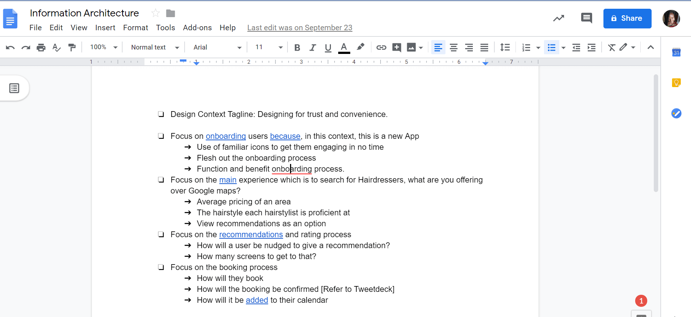
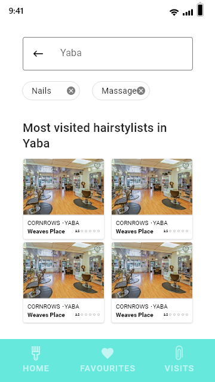
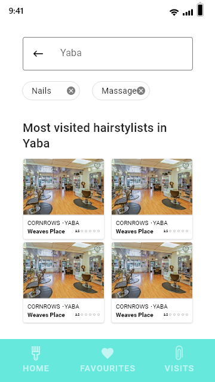
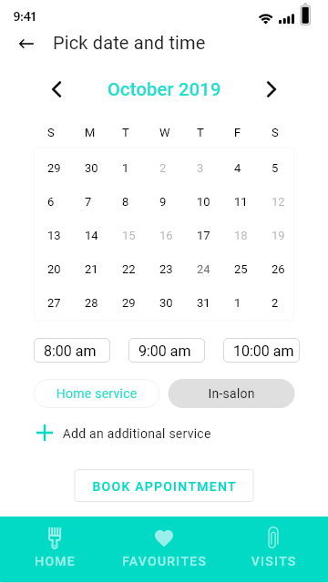
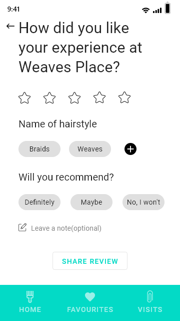
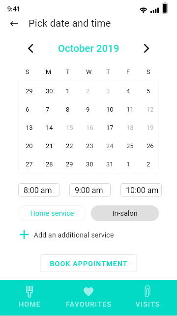
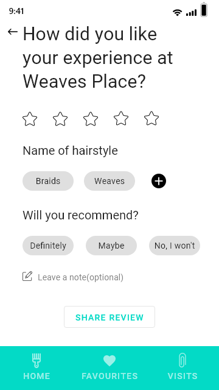

Designing An App for Scheduling Hair Styling Appointments
This project is an exploration of a human-centred approach to digitizing booking appointment with a hairstylist. The project was inspired by the question "What if there was an online product that allows me to book a hairstylists appointment around me?"
It was exciting to design such an app, however, it was important to understand the relevance of the product to the intended users, the purpose of the product, and whether the most effective approach to designing the product was an App.
The product was intended to serve women on the African continent and I conducted research to better understand women from different regions of the continent.
The Research
The research methods used in this project was user interviews and secondary (online) research.
User interview was chosen as interviewing is an opportunity to gain qualitative insight into how online interactions shape the way women interact with their hair and make decisions about their hair. As the product was targeted at African women, I reached out to students in my school (a pan-African institution) to understand the perspectives of women from different regions on the continent. 9 people responded to my request for an interview. The research was conducted with their consent and understanding of the goal of the interview i.e the purpose of collecting information from them.
The research question:
"How does online interaction currently influence decisions women make with their hair?"
The interview questions and transcripts are available here.
To complement the interviews, I conducted secondary research to better understand internet consumers in Africa. Major findings from the secondary research are available here here.
From the information gathered from the interview and secondary research, user groups were identified and personas created for each user group. The personas are:
- The Googlers(Quick to search online for their needs):
They are very trusting of the internet and online reviews. Heavily influenced by e-culture in their decision-making. Love convenience. Have made purchases online. Trust-level: High.
- The E-skeptics(Very skeptical of reviews they see online):
They have made a few online purchases and will consider making more. Moderately influenced by e-culture and Ads. Sees Ads online and goes offline to purchase. Trust-level: Moderate.
- The Unwilling(Would rather make the decision physically):
They have never made an online purchase and highly doubts will consider making one. Values quality or certainty over convenience. Trust-level: Low.
Findings
The information gathered from the user interviews was a lot and to make sense of this information, I used the card sorting method to group the information into buckets. With this, I was able to identify themes in the responses I got from the interviews.

From the, card sort, the following were recurring themes from the interview:
- Trust
- Credibility
- Convenience
Most of the participants suggested from the interviews that they reach out to people they are close to (friends, family) whenever they need a hairstylist. They are also likely to become repeat customers after the first encounter with a hairstylist, depending on the quality of the service. Because of the trust built up in the relationship, they were more likely to trust recommendations from a familiar person.
The main convincing factor in whether or not to visit a hairstylist was the quality of service, either as a repeat customer or from a referral. This shows that hairstylists who provide quality service are more likely to be trusted.
Some of the participants noted that they will use wigs and learn to make their own hair if they're in a new place where they don't know anybody. Without a familiar person to introduce them to a hairstylist, some of the participants decided based on a hairstylist's social media images. Additionally, participants typically search social media platforms such as Pinterest, Instagram for inspiration to determine which hairstyle to make before choosing a hairstyle. To gain the trusts of users, it is important to design a more convenient experience.
From the secondary research it was observed that the leading operating system in use in Africa is the Andriod OS with a whopping 80.95% followed closely by the iOS with 13.23% of the market share. The software will, therefore, be designed primarily for Andriod users and will be updated to accommodate to iOS users in subsequent design iterations. Another statistic on mobile devices is that 90% of screen time is spent on applications and 10% on the mobile web. As booking an appointment with a hairstylist is an activity the user will perform with little to no cognitive load, choosing to design an App is an ideal decision.
Design Goals
The goal of this design is to embody trust, credibility and convenience in the process of designing the product. The recurring themes from the user interviews raised the following questions:
"How do I design this product to gain user trust?"
"How do I communicate the convenience of the App's functionality in the design?"
This led to the decision to concentrate on the design of the experience of booking and recommendation, onboarding and search. The onboarding process aims at communicating to its users the essence of the product and gaining their confidence. The recommendation process is intended to demonstrate the hairstylist's credibility. The process of booking and recommendation was structured to be a specialized process that recognizes the context of the hair industry and provides users with a seamless experience.
Design Strategy
The design strategy was to focus on the following throughout the design process:
- Simple and easy to understand design.
Focus on the processes identified to achieve the design goals.
Prototype using mid-fidelity prototypes as that is closer to how users experience app use. Get feedback and come up with final designs.
Pay attention to the copies. Ensure it aids the user experience.
Focus on designing for the power user group - the Googlers.
Designs
The first output of prototyping was a mid-fidelity protototype. This was chosen instead of a lo-fi in order to test with an experience closer to how users experience app use. I tested this with a few people to get their feedback and incorporated the feedback. There was a lot of intentionality in the icons used in the design for instance, the afro comb icon was used as it is familiar with most women in the African continent.
Search Experience

 

The default landing page. The copy was tailored to guide the users, using language that is clear and does not leave them confused. Use of concise copy is a part of the strategy for seamlessly onboarding users to the app. The "home" option in the tab at the bottom of the page is active to give users context into what part of the App they are.
An active page that shows what happens when a user searches for a place. In the interviews, some participants noted they will like to know if a hairstylist offers additional services hence the need to have these services as options users can use in refining their search.
The page showing refined search results. The menu bar is inactive as this page isn't considered the homepage. The cards showing each hairstylist indicate a hairstyle that is the competency of a hairstylist, location, and rating. Showing the competency of the hairstylist was influenced by interview participants who visited hairstylists because they liked the hairstyle of somebody and asked for the hairstylist who made it.
Booking and Review Experience
 



AAAAAAAABBBBBBBBcccccccccccc
AAAAAAAABBBBBBBBcccccccccccc
AAAAAAAABBBBBBBBcccccccccccc
Onboarding Experience
The onboarding process is designed to acquaint the app users with funtionalities of the app outside the main functionality which is searching for hairstylists. The part of the tab describing the page is active and the copy and graphic are tailored towards onboarding users on what information the page is supposed to contain.
Reflections
In retrospect, I will incorporate the following in the next iteration of this project. As this was an exploratory project, it was imporatant to reflect on ways I can improve this design in the near future.
Design a referral process. A lot of the participants I interviewed relied on the recommendation of friends and families to visit a hairdresser. While the reviews and ratings give them an opportunity to choose a hairstylist based on other's recommendation, it will be interesting to observe the effect of a referral process to the success of the app use.
Design for unexpected moments. My current design assumes that everything will always go right which is not usually the case with software.
Consider the hairstylist's viewpoint and interaction with the app in the design process.